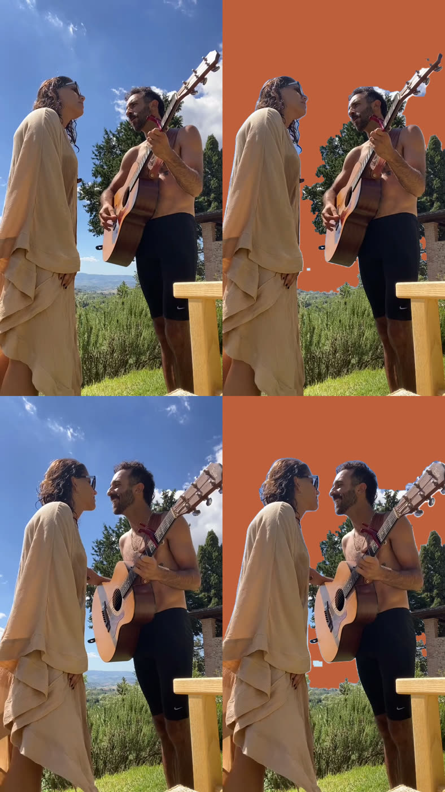
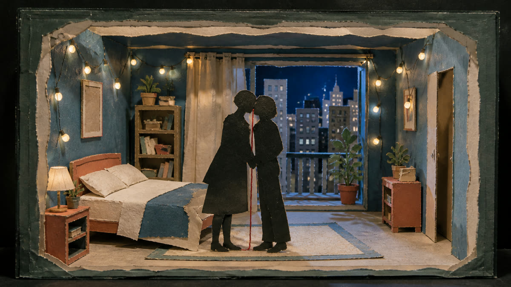

Paper sky above the two of you
Your idea: paper birds, clouds, angels peeking out. The clouds slide apart on the kiss and show the old couple at the long table with the whole family. Three taps and Codex starts the paper pieces. Zero credits so far, zero planned.
Proof 1: the real sky comes off, for free
- The whole 10 seconds, frame 27 to the kiss. The orange card is where the paper sky will go
- Hair, sunglasses, the guitar head and the gap between you two hold. Made on the Mac, nothing uploaded anywhere
- Still rough: a thin pale halo around both heads, ragged edges on the tree, a few sky specks. That is the final edge pass, not a blocker
The far hills got taken with the sky in this test. I will keep the real hills and trees unless you say otherwise.
First and last frame, before and after

1. The style source

Your locked Paper Theater B frame from איתך. It is a night room with bulbs. Your sky is Tuscan noon, so I would take only the paper itself: cut card, visible edges, blue, cream, terracotta. Not the night light.
2. The family table
The Last Supper layout is strong: one long table, everyone facing us, the old couple in the middle. The risk: many people read that painting as a farewell, the last meal before a death. On a wedding kiss that can land wrong.
3. The family figures
Either way: no faces, soft amorphous shapes, as you asked.